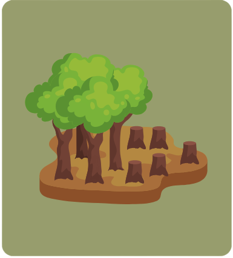

Nota Penting
-
Masalah: Pembuangan sisa kimia di sungai.
Penyelesaian: Melabur dalam rawatan air.
-

Masalah: Pembalakan haram.
Penyelesaian: Mencegah pembalakan haram.
-
Masalah: Penipisan lapisan ozon.
Penyelesaian: Mengurangkan pelepasan gas rumah hijau.
-
Masalah: Pemanasan global.
Penyelesaian: Mempromosikan bandar hijau.
-
Masalah: Jerebu
Penyelesaian: "Zero Carbon" inisiatif.
-
Masalah: Sisa yang tidak diuruskan dengan baik
Penyelesaian: Kitar semula sampah atau menggunakan insinerator.
-
Masalah: Penggunaan bahan api fosil dan menghasilkan pelepasan gas rumah kaca.
Penyelesaian: Beralih ke tenaga boleh diperbaharui.
-

Masalah: peranti elektronik yang dibuang tanpa pengurusan yang betul.
Penyelesaian: Mempromosikan program kitar semula peranti elektronik.
-
Masalah: bahan pencemar udara yang membahayakan kesihatan dan alam sekitar.
Penyelesaian: Mempromosikan penggunaan pengangkutan awam.
-
Masalah: Penggunaan bahan api fosil untuk mesin pertanian,.
Penyelesaian: Mengamalkan pertanian lestari.